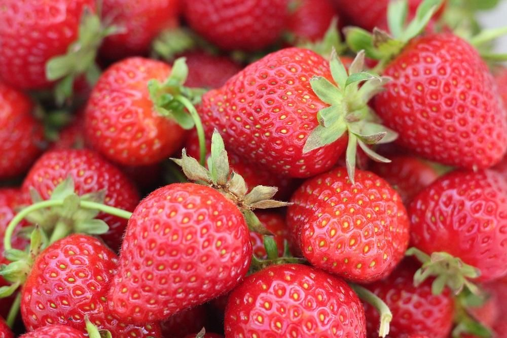

Tips Merawat Strawberry
1. Siram tanaman strawberry dua hari sekali, terutama pada musim kemarau. Jika masuk musim penghujan, penyiraman dilakukan
ketika media tanam terlihat kering.
2. Untuk proses pemupukan dalam menanam strawberry di pot dengan Pupuk Organik Cair GDM Spesialis Buah-buahan dengan
takaran dosis 500 ml/tangka.
3. Pemangkasan pada tanaman strawberry berlaku pada tiga bagian tanaman, yakni daun, stolon, dan bunga.
Pemangkasan daun dilakukan jika daun terlalu rimbun atau daun terserang penyakit.
4. Penggantian media menanam strawberry di pot harus segera dilakukan jika media sudah terlihat memadat, akar banyak keluar dari wadah tanam,
dan pertumbuhan tanaman melambat, bahkan tidak mau berbunga. Komposisi media yang digunakan sama dengan media sebelumnya.